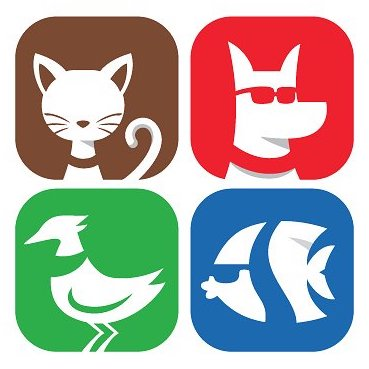

<mat-sidenav-container class="container-fluid px-0 " *ngIf="!auth.shouldRun">
  <mat-sidenav class="h-100" #sidenav mode="over" position="end" [(opened)]="auth.opened" (opened)="auth.events.push('open!')"
    (closed)="auth.events.push('close!')">
    <div class="sidebar mt-2 " data-color="green" data-background-color="white" data-image="../assets/img/sidebar-1.jpg">
      <!--
            Tip 1: You can change the color of the sidebar using: data-color="purple | azure | green | orange | danger"

            Tip 2: you can also add an image using data-image tag
        -->
        <mat-chip-list class="mx-4 mat-chip-list-stacked nav flex-column align-content-center">
          <mat-chip *ngIf="userIsAuthenticated" class="nav-item active">
            <a class="nav-link" routerLink="dashboard">
              <i class="material-icons">dashboard</i>
              <p>Dashboard</p>
            </a>
          </mat-chip>
          <mat-chip *ngIf="!userIsAuthenticated" class="nav-item">
            <a class="nav-link" routerLink="login">
              <i class="material-icons">person</i>
              <p>Login</p>
            </a>
          </mat-chip>

          <mat-chip *ngIf="!userIsAuthenticated" class="nav-item">
            <a class="nav-link" routerLink="signup">
              <i class="material-icons">content_paste</i>
              <p>Sign Up</p>
            </a>
          </mat-chip>

          <mat-chip class="nav-item">
              <a class="nav-link" (click)="auth.getLogin()">
                <i class="material-icons">library_books</i>
                <p>check auth</p>
              </a>
            </mat-chip>
             <mat-chip *ngIf="!userIsAuthenticated" class="nav-item">
                <a class="nav-link" (click)="auth.facebook()">
                  <i class="material-icons">library_books</i>
                  <p>Login Facebook</p>
                </a>
              </mat-chip>

          <!--  <mat-chip class="nav-item">
            <a class="nav-link" href="./icons.html">
              <i class="material-icons">bubble_chart</i>
              <p>Icons</p>
            </a>
          </mat-chip>

          <mat-chip class="nav-item">
            <a class="nav-link" href="./notifications.html">
              <i class="material-icons">notifications</i>
              <p>Notifications</p>
            </a>
          </mat-chip> -->

          <mat-chip *ngIf="userIsAuthenticated" class="nav-item">
            <a class="nav-link" (click)="auth.doLogout()">
              <i class="material-icons">language</i>
              <p>Log off</p>
            </a>
          </mat-chip>

        </mat-chip-list>
    </div>
  </mat-sidenav>
  <mat-sidenav-content>
    <!-- <div class="navbar-translate justify-content-around">
      <div>
        <a class="navbar-brand p-0" routerLink="home">

          Pets RGV
          {{ this.userName }}</a>
        </div>
        <div (click)="toggle()">
        <i class="material-icons">
            menu
            </i>
          </div>
    </div> -->
  <nav class="navbar  navbar-expand-xs navbar-light bg-light">
    <a class="navbar-brand p-0" routerLink="home">

      Pets RGV
    </a> <span *ngIf="userName">{{ userName }}</span>
    <button class="navbar-toggler" type="button" (click)="toggle()" aria-controls="navbarNavDropdown" aria-expanded="false" aria-label="Toggle navigation">
      <span class="navbar-toggler-icon"></span>
    </button>
  </nav>

    <router-outlet></router-outlet>
  </mat-sidenav-content>
</mat-sidenav-container>

<!-- <nav class="navbar navbar-default navbar-expand-lg">
  <div class="container">
    <div class="navbar-translate">
      <a class="navbar-brand p-0" routerLink="home">
        Pets RGV</a>
      <button class="navbar-toggler" type="button" data-toggle="collapse" aria-expanded="false" aria-label="Toggle navigation">
        <span class="navbar-toggler-icon"></span>
        <span class="navbar-toggler-icon"></span>
        <span class="navbar-toggler-icon"></span>
      </button>
    </div>
    <div class="collapse navbar-collapse">
      <ul class="navbar-nav ml-auto">
        <li class="nav-item">
          <a routerLink="login" class="btn btn-white btn-round btn-raised ">
            Login
          </a>
        </li>
        <li routerLink="dashboard" *ngIf="userIsAuthenticated" class="nav-item">
          <a class="btn btn-white btn-round btn-raised ">
            {{ userEmail }}
          </a>
        </li>
        <li (click)="this.auth.doLogout()" *ngIf="userIsAuthenticated" class="nav-item">
          <a class="btn btn-white btn-round btn-raised ">
            Logout
          </a>
        </li>
        <li *ngIf="!userIsAuthenticated" class="nav-item">
          <a routerLink="signup" class="btn bg-success text-light btn-raised btn-round " data-toggle="dropdown">
            Register
          </a>
        </li>
        <li  class="nav-item">
          <a (click)="auth.isAuthenticated()" class="btn bg-success text-light btn-raised btn-round " data-toggle="dropdown">
            Register
          </a>
        </li>
      </ul>
    </div>
  </div>
</nav>

<router-outlet></router-outlet> -->

